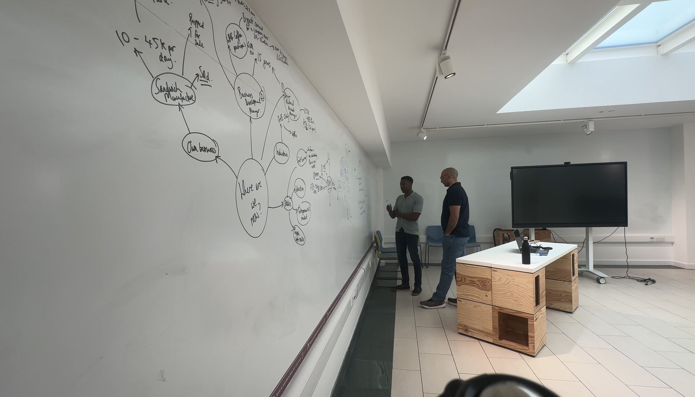

SH. 07 / Going Further
Catalyst Growth Coaching
Going further.
Where the Whiteboard Sessions lead.

01 / The Argument
Sequence of works
The Whiteboard Sessions are where the work begins.
What happens next depends on what the sessions reveal. Sometimes it’s more sessions; the question is bigger than an hour allowed. Sometimes it’s working with the team; the thinking needs to happen with them, not just about them. Sometimes it’s coaching the person you’re developing; the successor question is best answered with the successor in the room. Sometimes it’s being in the business with you for a period, alongside whatever you’re working through.
The shape of the work follows the work. Not the other way around.
02 / What This Looks Like
Case records · 3 entries
What this looks like
-
A client booked a session because they were stuck on a strategic question. We worked through it at the board. By the end, the question wasn’t the strategic one. It was a question about the team that needed to think differently. We ran the next session with the team.
-
A client booked a session about whether to promote a particular person to the leadership team. We worked through it at the board. The session revealed the person was ready but the role needed redesigning around their actual capabilities. The next sessions were with that person, redesigning their remit.
-
A client booked a session because the business was scaling faster than their bandwidth allowed. We worked through it at the board. The session revealed they couldn’t do their actual job because they were doing three other jobs as well. The next phase was me being in the business with them, helping them work out what to delegate, what to hire, and what to stop doing.
In each case, the first session set the next move. The relationship took shape around the work.

03 / The Invitation
First session · One hour
If you’re at the point of asking what this could look like for you, the conversation starts the same way as anything else here. An hour at the board.
The first session will tell us both whether there’s a longer relationship in this, and what shape it should take.